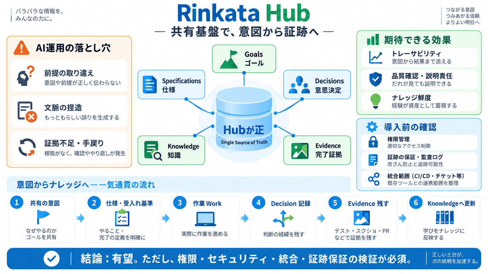

Rinkata: build what you meant to build, with agents that stay on track
inkata # Build what you meant to buildbuild, with agents that stay on track Rinkata Hub UI is where your team and your…

inkata # Build what you meant to buildbuild, with agents that stay on track Rinkata Hub UI is where your team and your…
Skip to content shinetech- A 25-year commitment as a strategic technical partner. 1-week trial AI & Automation # A…
If your team wants support for a more complex OpenClaw deployment, custom workflow automation services are available to …
### Datasea Reports Fiscal Year 2026 Results with Gross Profit Up 70.1% and Gross Margin Increased to 10.2% Despite Lowe…
This agent integration enables AI-powered workflows where Amplitude acts as an agentic product manager, bridging the gap…